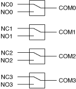

通用拓扑由多个隔离继电器组成。通用开关模块的每个通道可以连接一个输入到一个输出。它们通常用于打开或关闭电机、风扇和灯等设备，或切换高压或大电流信号。
下图显示了一个示例通用拓扑。

提交有关此主题的反馈。 访问ni.com/support以获得技术支持。
 提交有关此主题的反馈。
提交有关此主题的反馈。 访问ni.com/support以获得技术支持。 提交有关此主题的反馈。 访问ni.com/support以获得技术支持。
访问ni.com/support以获得技术支持。 提交有关此主题的反馈。 访问ni.com/support以获得技术支持。